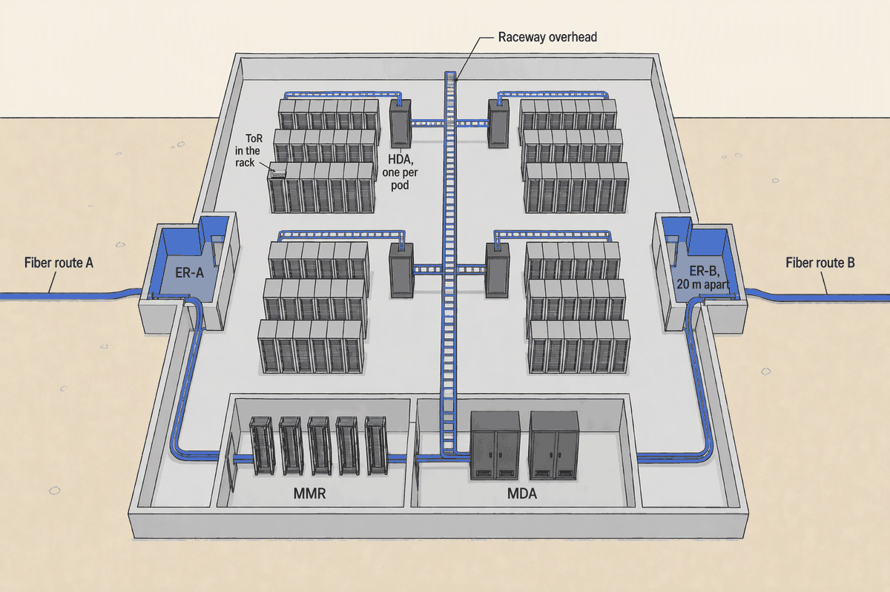
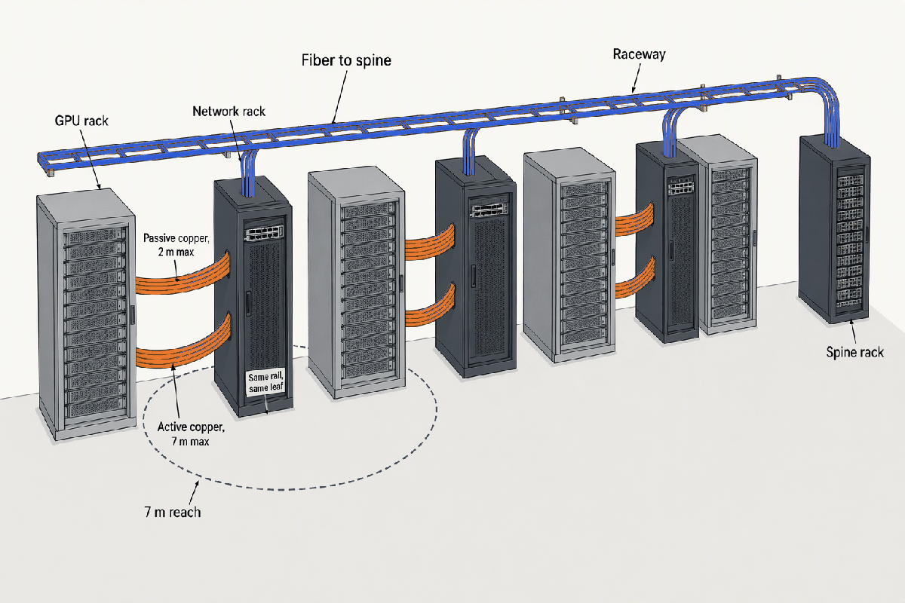
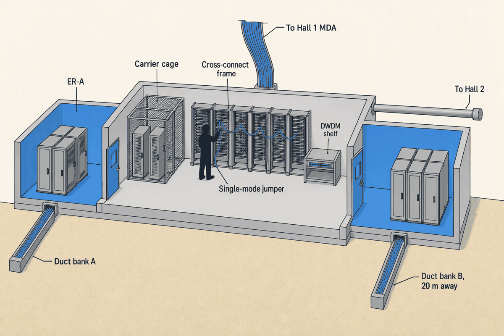
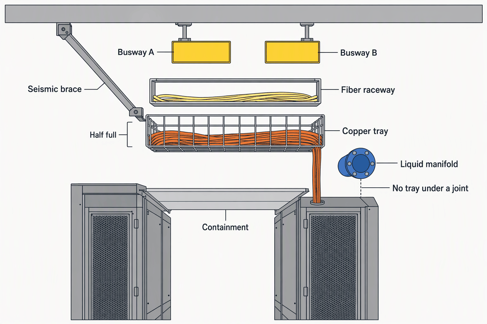

Network Architecture and Structured Cabling
Deep detail and sources: the appendix for this topic. Short version: sixty words.
Topic 8 stopped at the rack door, where NVLink copper ends. This chapter follows a bit the rest of the way: two hops on the logical fabric, six rooms and three contracts on the physical one. In an AI hall the second path rules the floor plan, because copper reach, optics watts and tray fill decide where a rack can stand.
- 2 hopsBetween any two servers on a spine-leaf fabricThe logical path is short; the physical one is the chapter
- ~2 mPassive copper reach at 800G, down from 3–5 m at 400GA cabling detail became a floor-plan rule
- ~6 optics per GPUAt 14–18 W each, in rail-optimized designsThe network is an optics problem in a switching costume
- 15% of cluster costNetwork share of a GB300 cluster; ~60% of that is optics (SemiAnalysis, 2025)Non-blocking is paid for in lasers
- 80% → under a thirdInfiniBand's share of AI back-end switching, late 2023 to 2025 (Dell'Oro)The crossover already happened
- $100–300 a monthOne single-mode jumper in the MMR; 19% of Equinix's recurring revenueThe patch panel is a franchise
The bit's path
- Carrier fiber in the duct bank
- the carrier's cable in the owner's conduit
- Entrance room: carrier gear, demarcation
- operator fiber to the MMR
- MMR cross-connect
- one single-mode jumper, the operator's revenue line
- MDA: border routers, main cross-connect
- 144-fiber trunk, the operator's backbone
- HDA: spine or aggregation, patch fields
- 2 × 400G DR4 on base-8 single-mode, to the cabinet in a retail pod
- ToR leaf in the rack
- passive DAC, 2 m or less, the tenant's
- Server NIC
The logical path is two hops. The physical one crosses six rooms and three contracts, and each hand-off is a place where a contract, a test report or a label can be missing. This chapter follows the second path (APX-network §7).

The standard's letters are rooms with doors: two entrances so one backhoe cannot cut both, one hub, one closet per pod. The star between them is what the owner pre-builds so a tenant can light a pod without construction (APX-network §9).
The logical fabric
| Topology | Built for | Hops | Idle links | Scale on 51.2T | Where in 2025–26 |
|---|---|---|---|---|---|
| Three-tier | North-south | Up to 4–6 | STP blocks half | n/a | Legacy enterprise |
| Spine-leaf, 2 tiers | East-west | 2 | None, ECMP | ~2,048 GPUs at 1:1 | Every pod |
| Super-spine, 3 tiers | East-west across pods | 4 | None | 16,000+ GPUs | Hall and campus, above ~1,024 nodes |
The industry moved because traffic turned sideways: a tree wastes half its links waiting for a failure, a Clos uses all of them. Non-blocking is paid for in optics, not switches, and radix is what keeps the tier count at two (APX-network §1).
Oversubscription, radix and the control plane
- On a radix-64 leaf, 1:1 is 32 ports down and 32 up; 3:1 is 48 down and 16 up. Landing the same servers non-blocking costs 50% more leaves, 50% more spines and roughly twice the inter-switch optics and fiber.
- One 51.2T switch (64 × 800G) replaces twelve 12.8T switches; a higher radix collapses three tiers to two. 102.4T and 1.6T ports arrive in 2026.
- Underlay: eBGP per RFC 7938, a private ASN per ToR, Layer 3 to the rack. Overlay: EVPN/VXLAN for multi-tenant colo; single-tenant AI fabrics skip it for the microseconds (APX-network §2).
| Placement | Cabling | Switches and stranded ports | Failure domain | Where in Hall 1 |
|---|---|---|---|---|
| ToR | In-rack DAC; only uplinks leave | Most switches; strands ports in light racks | One rack | 15 and 40 kW pods |
| EoR / MoR | Long dense runs to the row end | Fewest switches | A row | 8 kW retail pod, pending |
| AI adjacent-rack leaf | DAC and AEC into a network rack within two racks; optics up | A leaf group per 2 GPU racks | One scalable unit | 120 kW pod, forced by reach |
ToR trades switches for short cables, EoR trades cables for switches, and at 800G neither is a free choice. The AI pod gets a network rack every two GPU racks because nothing else keeps the copper short enough (APX-network §2).
The AI back-end
- GPU, one ConnectX-8 NIC
- 800G split 2 × 400G; passive DAC 2 m or less in the rack, AEC to 7 m into the network rack
- Rail leaf, plane A and plane B; GPU 1 of every rack lands on the same leaf
- DR4/DR8 on single-mode, 10–100 m across the pod
- Spine
- DR/FR on single-mode, 100 m and more, only if a tenant joins pods across halls
- Super-spine
Scale-up ends at the rack door on NVLink copper. From there a rail is a promise that same-index GPUs are one hop apart, and keeping that promise inside 7 m of copper is what decides where the leaf stands (APX-network §3).
The three sibling networks, and the scalable unit
- Every NVL72 node also carries a front-end 2 × 400G pair for management, storage and user traffic, a storage network often merged with it at small scale, and a 1G BMC port on the OOB (next section).
- NVIDIA's reference architecture counts roughly 8 leaf and 4 spine per two-rack scalable unit per plane; the dump defines the unit as one rack and then counts two, so the ratio is kept as indicative (APX-network §3).
| Dimension | InfiniBand | Ethernet + RoCEv2 | Ultra Ethernet 1.0 |
|---|---|---|---|
| Losslessness | Credit-based, native | PFC + ECN tuning | New transport, packet spray |
| Latency | ~1–2 µs | ~2–5 µs | IB-class target |
| In-network reduction | SHARP, up to 9× | None | Roadmap |
| Tooling | Subnet Manager, one vendor | Standard Ethernet | Open, multi-vendor |
| Lock-in and cost | highest | NVIDIA-coupled | lowest |
| 2025–26 share | Losing the lead | Over two thirds of AI back-end switch sales in 2025 | Spec 11 Jun 2025, products 2026 |
| Reference pod | ○tenant option | ●proposed | ◐NIC-ready |
InfiniBand went from four fifths of the market to second place in two years because hyperscalers voted Ethernet. The reference pod follows them and keeps a lane open for Ultra Ethernet; a tenant who wants SHARP brings InfiniBand (APX-network §4).
Reach, rails and watts
- passive DAC, copper1–2 m
- AEC, retimed copper2–7 m
- AOC and SR8 multimode7–100 m
- DR4/DR8 single-mode100–500 m
- FR4 single-mode500–2000 m
- LR4 single-mode2000–10000 m
- IEEE 802.3ck limit2 m
- DAC at 400G, the reach that vanished4 m
- GPU rack to the adjacent network rack6 m
- leaf to spine across the pod40 m
- Cat6A at 10G100 m
- HDA to MDA in Hall 1120 m
- MMR to Hall 4400 m
- the carrier hotel, 5 µs per km10000 m
Copper lost two thirds of its reach in one generation and a 3–7 m dead zone opened that only retimed copper fills. The marks past 7 m are where the hall's rooms are; hall distances are the author's, indicative (APX-network §5).

A rail is a bundle of copper that cannot be longer than a rack is wide, and a network rack every two GPU racks is the row layout it forces. The fiber starts only where the copper gives out (APX-network §12).
- GPU racks and storage21.3~21–21.5 MW
- Back-end optics1.486,400 transceivers × ~16 W
- Switch electronics and the rest of the network1.3~1.1–1.6 MW
A tenth of the pod's power never reaches a GPU, and half of that tenth is lasers. Optics are also the dominant failure item, so the operator's air-cooled network racks and a spares room are not an afterthought (APX-network §6).
The edge of the building
| Product | What it physically is | Who provides and pays | Price or reach | Reference campus |
|---|---|---|---|---|
| Cross-connect | A single-mode jumper between two panels in the MMR | Operator sells | $100–300 a month | Retail tenants and carriers |
| Interconnect | Equipment to equipment inside a cage | Tenant | Free | Every cage |
| Dark fiber DCI | A fiber pair you light with DWDM | Carrier or owner build | Metro | Hall 1 to a second site |
| Wavelength, 400ZR/800ZR | Coherent pluggable in a router port | Carrier or owner | 80–120 km amplified; ZR+ to 1,000 km | To the carrier hotel |
| Transit | Full routes from an upstream | Tenant pays per Mbps | Metered | Retail tenants |
| Peering and cloud on-ramps | Settlement-free or private path at an IXP | Tenant | PHX-IX, carrier hotels; Infomart in Dallas | Retail tenants |
The patch panel is a franchise: a jumper worth a few hundred dollars a month is a fifth of Equinix's recurring revenue, and the wholesale pods that build their own fabric hand almost none of it to the operator (APX-network §7).

The MMR is the one room the owner must finish and commission before the first tenant can light a circuit. The two duct banks behind it are why Topic 3 scored fiber by diversity, not by count (APX-network §7).
Out of band
- NOC and monitoring collectors
- its own uplink: a second carrier at ER-B plus a cellular modem, never the production fabric
- OOB core, own switches, own power
- separate fiber to each HDA
- OOB access switch at each HDA, 48 × 1G class
- Cat6A, 1–2 ports per device
- Console servers, BMC/IPMI/Redfish, switch management ports
- separate segments
- Facility OT (BMS, EPMS, DCIM, security, PDU and CDU controllers) and tenant IT
The OOB must share nothing: path, power or carrier. It is commissioned first because power and cooling cannot be safely brought up blind, and Topic 10's systems are ports on it. The operator owns the facility OOB, the tenant its device OOB inside the cage (APX-network §8).
When the OOB shared fate
On 4 October 2021 a backbone audit command withdrew Meta's BGP routes for about six hours. In Meta's words, "our primary and out-of-band network access was down, so we sent engineers onsite to the data centers." Engineers drove to console ports because the rescue path depended on the thing it was meant to rescue (APX-network §8).
The physical plant
| Medium | Connector | Reach | Watts per end | Cost | Where in Hall 1 |
|---|---|---|---|---|---|
| Passive DAC | None | ~2 m at 800G | ~0 | Inside the rack | |
| AEC | None | 5–7 m | 10–11 W | GPU rack to network rack | |
| Cat6A | RJ45 | 100 m at 10G, PoE | Small | OOB, cameras, sensors | |
| Cat8 | RJ45 | 30 m at 25/40G | Small | None proposed | |
| SR8 on OM4 | MPO-16 | 100 m | ~14 W | None; no 800G+ future | |
| DR4/DR8 on OS2 | MPO-12 APC | 500 m | 14–18 W | ToR to HDA, HDA to MDA, leaf to spine | |
| FR4/LR4 on OS2 | LC duplex | 2–10 km | 14–24 W | MMR to other halls, DCI |
The cable plant lives 15–25 years and the optics 3–5. So the plant is single-mode everywhere, base-8 trunks, MPO-12 APC, and copper only where a rack's width or a BMC's 1G allows (APX-network §9).
| Space | What sits there | Hall 1 count | Who owns the cabling | Who installs |
|---|---|---|---|---|
| ER | Carrier gear, demarcation | 2 | Operator | Carrier lateral into an owner room |
| MMR | Cross-connect frames, carrier cages, DWDM | 1, +1 with Hall 2 | Operator, sells jumpers | Owner deliverable |
| MDA | Border routers, main cross-connect | 1 | Operator | Division 27 to an RCDD design |
| HDA | Spine or aggregation, patch fields, OOB switches | 4 + 1 reserved | Operator to a retail cabinet; negotiable to a wholesale HDA | Division 27 |
| EDA | Rack, ToR, servers | 250 | Tenant inside the cage | Tenant or cluster vendor |
| IDA, ZDA | None in Hall 1 | 0 | Optional in TIA-942-C | n/a |
The standard's hierarchy is also the contract's: owner to the MDA, negotiable to the HDA, tenant from the cage door. Wholesale and retail differ only in where along that star the operator stops pulling cable (APX-network §11).

Three trades claim one ceiling and the cable is the one that must stay dry, cool and half empty. Stack order and fill are decided on a drawing with Topics 4, 6 and 7, not on site by whoever hangs first (APX-network §10).
Delivery and risk
- Carrier agreements and laterals orderedT+6–18Months of carrier lead; who pays the lateral; a pre-opening milestone
- Duct banks and both ERs, with site workT+18–22Two entries 20 m apart on separate routes
- Conduit, tray and raceway, with MEP rough-inT+24–31Stack order, trays per row, fill
- Pre-terminated trunks and terminations, once weather-tightT+26–34Single-mode plant, base-8, 25-year warranty registered
- OOB and NOC liveT+34–36Before power and cooling commissioning
- MMR commissioned, first carriers litT+36–40The owner deliverable
- Tier 1 and Tier 2 certification, labels, as-builtsT+38–40Hand-offs to Topic 11
- Tenant in-cage fabric and AI-pod fiber, with fit-outT+32–42+800G optics ordered a year ahead
Cabling has two clocks: the owner's plant goes in with the MEP and is proven before commissioning, and the carriers' laterals started a year earlier or the MMR opens dark. The tenant's fabric is a third clock the owner does not run but must leave pathway for (APX-network §11).
Trace a bit from the carrier's fiber to a server NIC in a retail pod, naming the TIA space and the medium at each hand-off, and say where the owner's cabling stops.
Duct bank into the entrance room (carrier fiber, demarcation); operator fiber to the MMR, where a single-mode jumper cross-connects it; backbone trunk to the MDA; 144-fiber trunk to the pod's HDA; 2 × 400G DR4 on base-8 single-mode to the ToR in the cabinet; passive DAC of 2 m or less to the NIC. In a retail pod the owner's cabling reaches the cabinet; in a wholesale pod it stops at the MDA, negotiable to the HDA, and the cage is the tenant's.
Why did spine-leaf replace three-tier, and on a radix-64 switch what does 1:1 cost against 3:1 in leaves, spines and optics?
Traffic turned east-west and a three-tier tree blocked half its links with spanning tree while adding hops; a Clos uses every link with ECMP and puts any two servers two hops apart. On a radix-64 leaf, 1:1 is 32 down and 32 up against 48 and 16 for 3:1, so non-blocking needs 50% more leaves, 50% more spines and roughly twice the inter-switch optics and fiber.
At 800G how far does passive copper reach, what fills the gap to 7 m, and what does that force in the AI row's layout?
About 2 m (IEEE 802.3ck), down from 3–5 m at 400G. Active electrical cable, retimed copper, fills the 3–7 m dead zone. Same-rail leaves must therefore stand within two racks of their GPUs, so the row alternates two GPU racks and one air-cooled network rack, and fiber begins only at the leaf uplinks.
InfiniBand, Ethernet with RoCEv2 or Ultra Ethernet: which led in 2025, which does in-network reduction, and which does the reference pod propose and why?
Ethernet led, taking over two thirds of AI back-end switch sales in 2025 after InfiniBand held over 80% in late 2023. Only InfiniBand does in-network reduction (SHARP, up to 9×). The reference pod proposes Ethernet with RoCEv2 on 51.2T switches for ecosystem, cost and vendor choice, with UEC-ready NICs; a tenant wanting SHARP brings InfiniBand.
Of the AI zone's 24 MW roughly how much is network, what share of that is optics, and how many optics does each GPU carry?
Roughly 2.5–3 MW, 10–12% of the zone; about 1.4 MW of that is optics, close to half; each GPU carries about six transceivers at 14–18 W each. By cost, network is 15% of a GB300 cluster and optics about 60% of that.
What must an OOB network share with nothing, why is it commissioned first, and what does a colo tenant own of it?
Path, power and carrier: its own switches, its own power, its own uplink through a second carrier at the other entrance room plus cellular, never the production fabric. It goes live first because power, cooling and the fabric cannot be safely brought up without management visibility. The operator owns the facility OOB; the tenant owns its device OOB inside the cage.